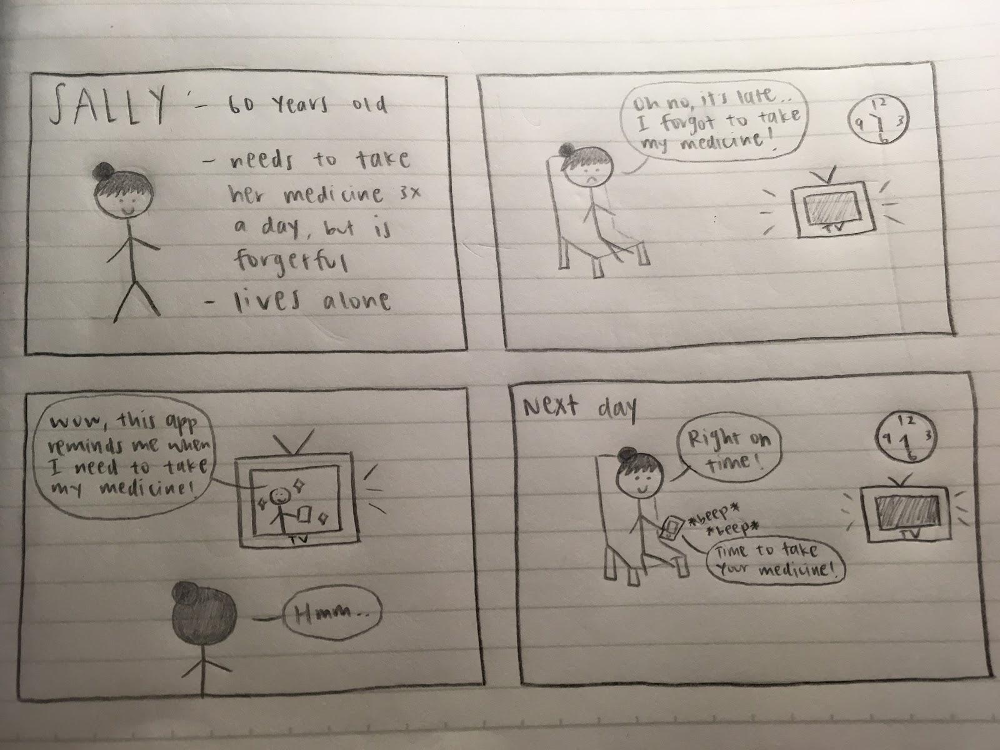
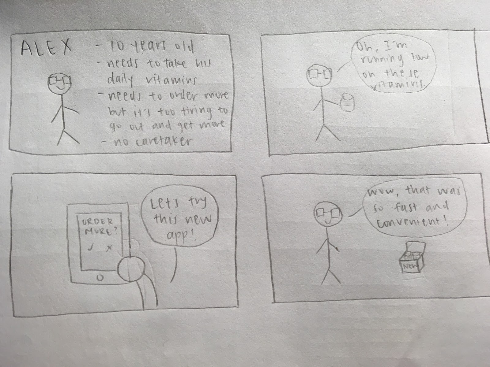
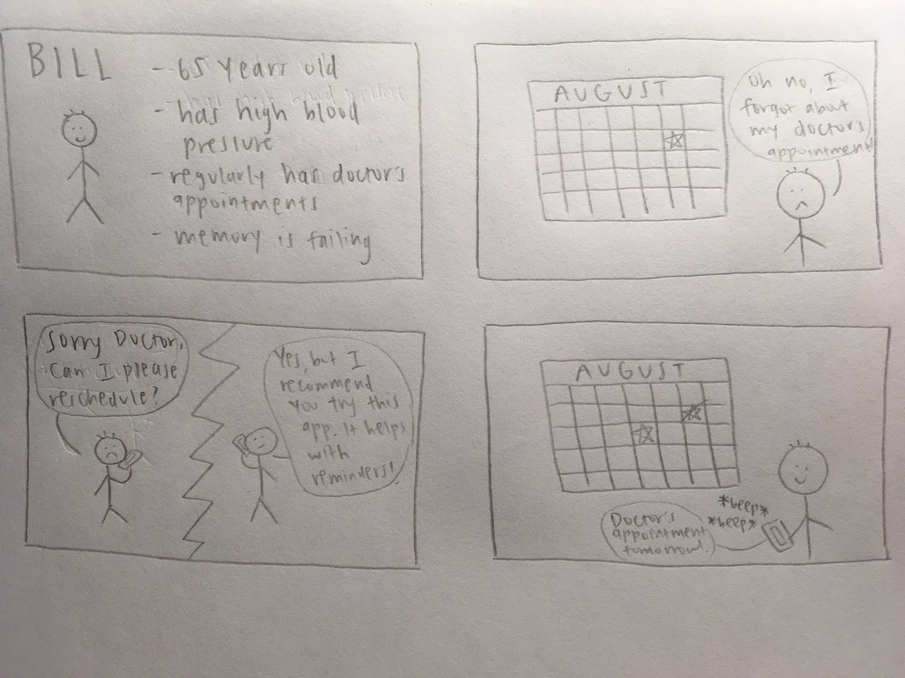
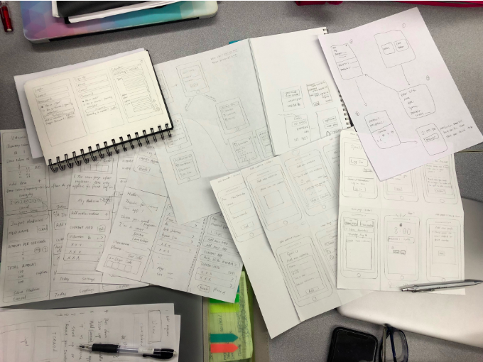
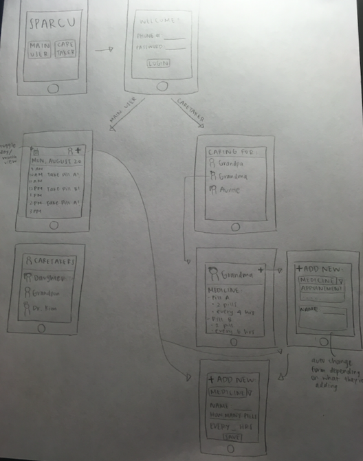
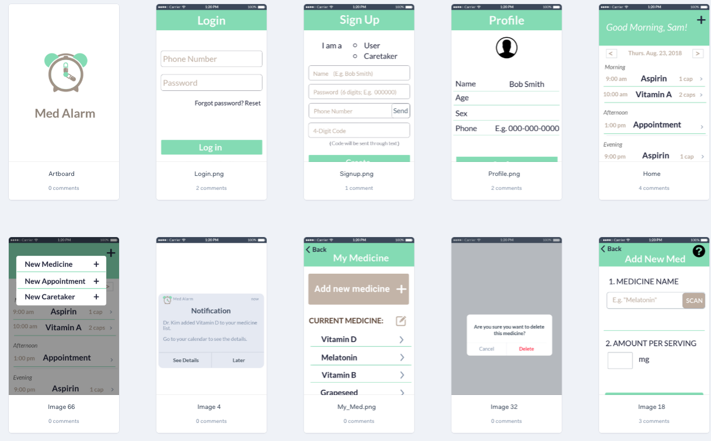
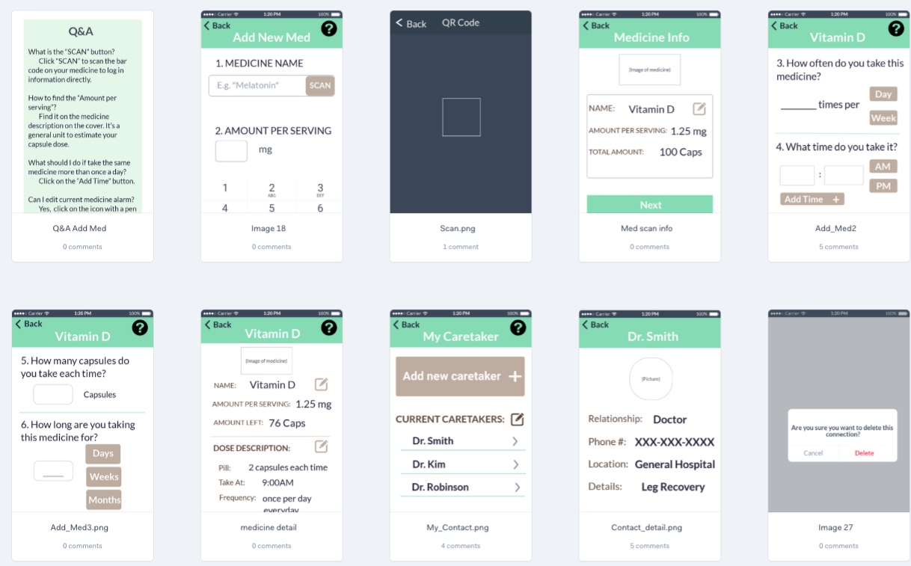
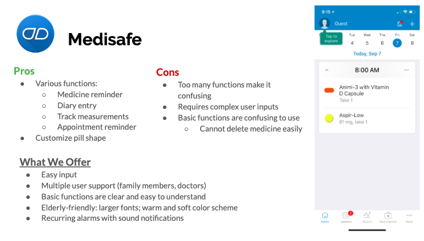
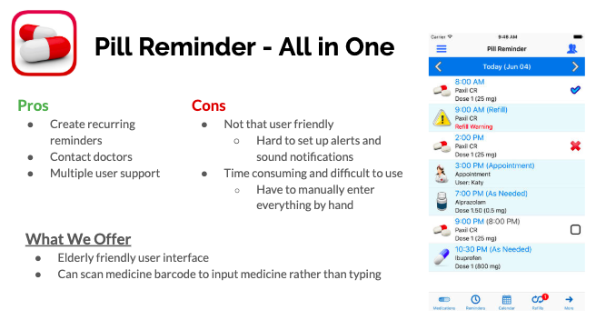
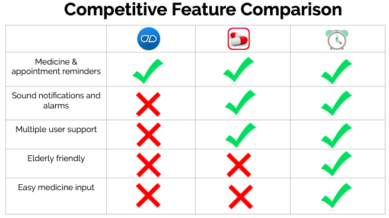

Med Alarm

Duration
Aug - Sept 2018
Course
COGS 187A - Usability & Information Architecture
Role
UI / UX Designer
Skills
UX Research, Storyboarding, Prototyping, Competitive Analysis
Tools
Marvel
Background
Elderly people who have medical needs often experience forgetting when and how often to take each of their prescribed medications. According to a 2010 Med Ad News poll with US individuals 65 years and older, 51% take at least 5 different prescription drugs regularly. 57% of those polled admit that they forget to take their medicine. Among those using 5 or more medications, 63% say they forget doses. Our team decided to design a web application with the elderly as our target audience. We wanted to help them alleviate this problem of forgetting to take their medicine and overall make their life easier.
Key Challenges
- Elderly people are not familiar with mobile apps.
- Many apps require users to manually input detailed information about medicine.
- Elderly people tend to have vision problems, which can lead to difficulty to use mobile apps.
Storyboarding
We brainstormed a couple of personas to think about the type of users who might use our app. We then created storyboards from these personas to generate some scenarios where our app could be used as a solution to their problems.
  Prototyping
We brainstormed many ideas and sketched out a few prototypes. We decided to offer two interfaces: one for the elderly and one for the caretakers (family members, doctors).
 Once you open the app, the user is greeted with two buttons: main user or caretaker. After selecting one of the two options and logging in, it will show two different screens based on which interface the user chose. The elderly people's interface would show a daily calendar with all their medicine reminders laid out in chronological order on their home screen. The caretaker's interface would show a list of contacts for who they're taking care of. Besides seeing all their medical information, they would also be able to add new medications for them.
User Testing
After creating an interactive prototype, we conducted user testing with others in our class. We received feedback regarding the layout of the app as well as the user flow. We grouped and summarized all the feedback we received into a single document so we could easily see which places we need to fix.
Features to Include:
- Grouping the medicine on the home page into 3 time periods (morning, afternoon, evening) as to not overwhelm the user with a list of medicine
- Implementing a QR code feature for users to easily input medicine information, rather than having to type everything out
- Supporting font and color contrast adjustment to accommodate for vision problems
After incorporating the user feedback we received, we designed the rest of our screens using Marvel and connected the user flow in a way that was clear. We made sure to include all the features mentioned above and decided on a soft and warm color scheme that would be easy on our user's eyes. We also provided help documentation and included a Q&A if users got stuck at any point. We made sure that each button was clickable and that there were confirmation messages for adding or deleting something. A link to our interactive prototype can be found here.
Sample screens:
 Competitive Analysis
We compared our app design to others that have the same function as ours. We performed a competitive analysis to see what similar features they offered, as well as what features make our app unique.
  This table shows a comparison of our app design with other existing apps. We chose these factors to compare because these were the factors that we decided were the most important for our target audience, the elderly. The main point of these apps are to keep track of medicine and have a reminder function for appointments. However, sound notifications and alarms are crucial as our users might misplace their phones. Multiple user support is a good feature because as our users are of old age, they may be quite forgetful, so having a caretaker with access to their account can be very helpful. We designed our interface especially for the elderly, so we offer font size adjustment and higher contrast settings. We also added a QR code feature so users can easily input their medicine by simply taking a picture of the QR code, rather than typing out all the tedious information that comes with a bottle of medicine.